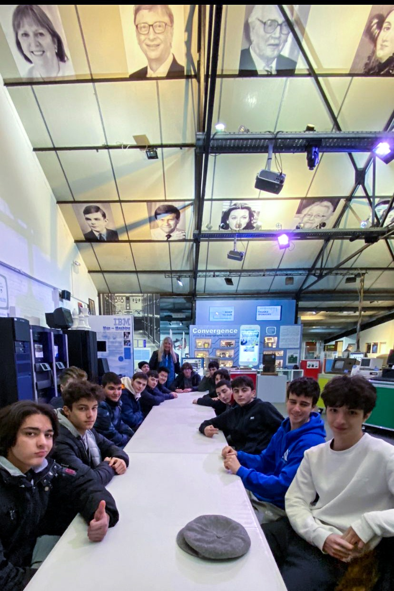

Study program
The time spent in Cambridge and London was not only based on visiting these historic cities but also on participating in an English course at Studio Cambridge that focused on practical communication skills.
Course Goals
- Improving speaking skills
- Improving writing skills
- Learning IT vocabularies
Cultural Experiences and Activities
Guided walking tour through the historic downtown of London
A guided tour between the colleges of the unique university city ended with the traditional Cambridge boating experience on river Cam
A dive into the history of computing from the age of turing to the present day with an interesting raspberry pi workshop
A small tasting experience of typical English cream tea with scone and clotted cream
Quick exterior tour of Windsor Castle before returning to London airport
Skills Acquired
Language skills
This experience significantly improved my confidence with the English language and provided valuable insights into British culture.
"From my point of view cambridge was not only an educational experience, but also a demonstration that I can manage on my own even in a foreign country: talking to family, buying ice cream, ordering a drink in a restaurant,... Being able to do all these things, even if small, has given a big boost to my autonomy."